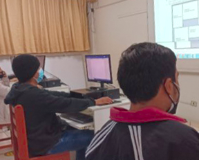

2º PROGRAMAS DE OFICINA: Elaboración de documentos de uso común en una oficina, utilizando eficientemente los programas Ms. Word, Excel, Power Point y Publisher.
3º ELABORACIÓN DE PRODUCTOS PUBLICITARIOS: Elaboración de gigantografías, almanaques, afiches, etc. con ayuda de los programas Photoshop y Corel Draw.
4º HERRAMIENTAS DIGITALES PARA EL TELETRABAJO: Utilizar eficaz y eficiente los recursos tecnológicos para la búsqueda de empleo y/o autoempleo.
5º DISEÑO DE PÁGINAS WEB: Utilizar eficaz y eficiente los programas para páginas web.
